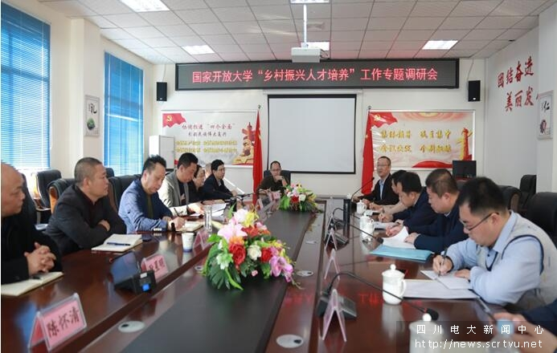
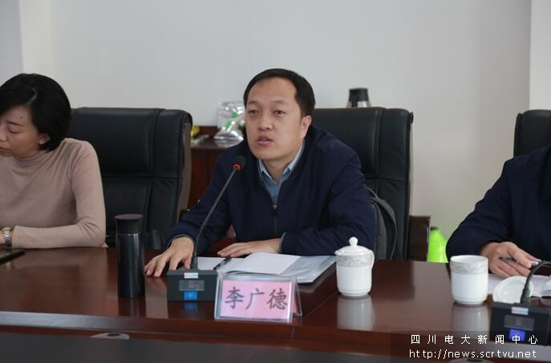
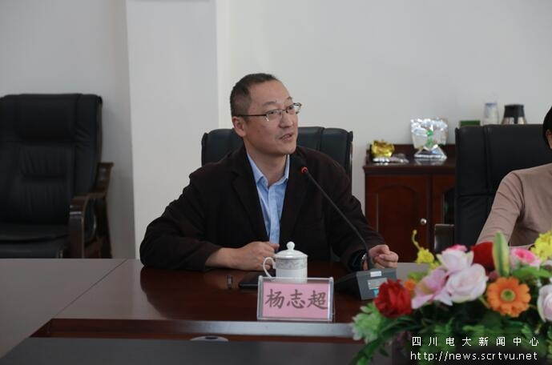
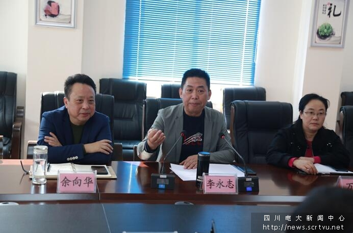
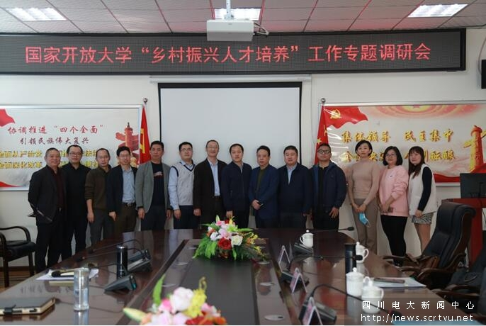
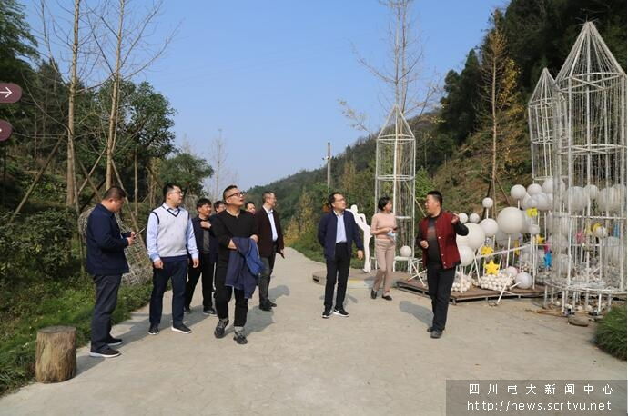
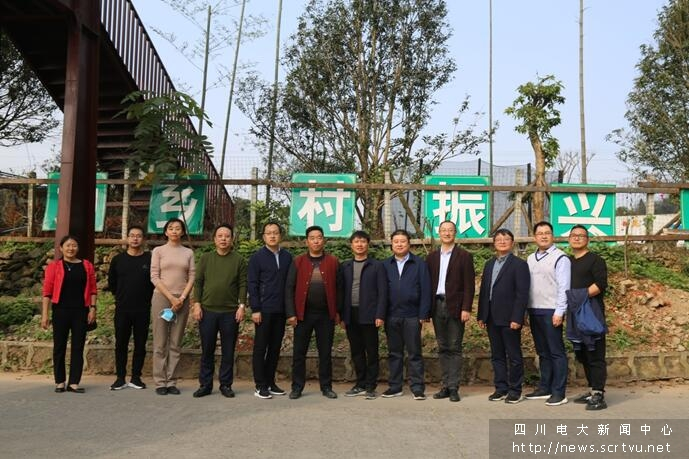

11月19日，国家开放大学农林医药教学部、江苏广播电视大学乡村振兴学院“乡村振兴、人才培养”工作专题调研会在乐山广播电视大学举行。国家开放大学农林医药教学部副部长李广德，农林学院院长付晋峰，副院长李瑞富，江苏电大乡村振兴学院院长杨志超，乐山电大党总支书记、校长余向华，副校长李永志及全体中层干部、专业责任教师、部分区县领导参加专题调研会。会议由杨志超主持。

图1：调研会现场
调研会上，李永志从开展“乡村振兴、人才培养”的项目实施情况、项目特点、项目前景、存在的问题与困难、乐山地方特色教学案例等方面做了详实的汇报。李永志表示，国家实施乡村振兴需要大量有知识、有技能、有远见、有开拓精神、综合素质高的基层乡村干部和致富带头人，国家开放大学实施“乡村振兴、人才培养”项目前景广阔。他根据乡村振兴对人才的需求，建议国家开放大学，在教材开发、课程设置，专家团队、师资队伍、教学方式、学习方式等方面，从顶层设计入手，让课程设置、教学方式、学习形式更加接地气，增加课程的含金量，增强专业的吸引力。

图2：李广德讲话

图3：杨志超讲话

图4：李永志汇报“乡村振兴、人才培养”项目情况

图5：会议现场
调研座谈会后，国开大、省电大领导一行前往乐山电大沙湾分校教学实践基地——太平镇罗一村研学游基地进行实地考察，并对乐山沙湾区实施的“乡村振兴、头雁提能人才培养”工作进行了全面的指导。

图6：国开大、省电大领导一行在乐山电大沙湾分校教学实践基地考察

图7：合影留念
通过座谈交流、实地考察，李广德充分肯定了乐山广播电视大学在“乡村振兴、人才培养”工作中所付出的努力和取得的成绩，并希望乐山广播电视大学继续为“乡村振兴、人才培养”做出更大的贡献，切实为地方经济建设和发展培养更多的实用性人才。（乐山电大 报道）